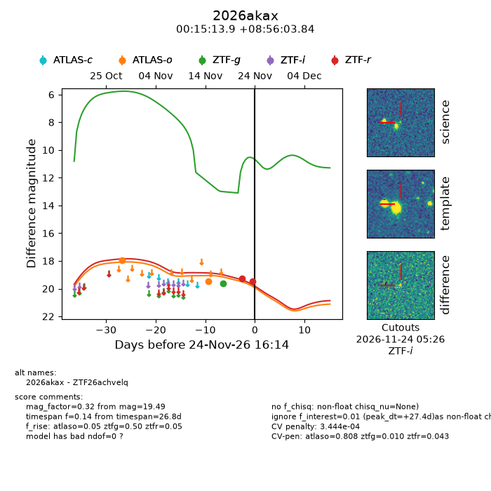
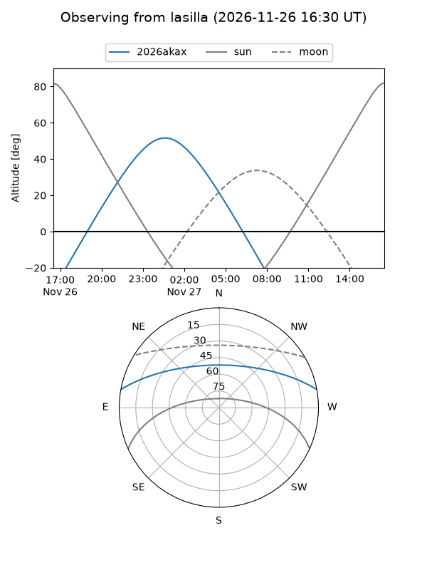
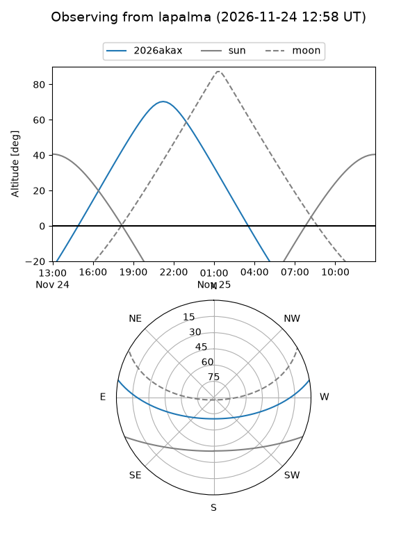
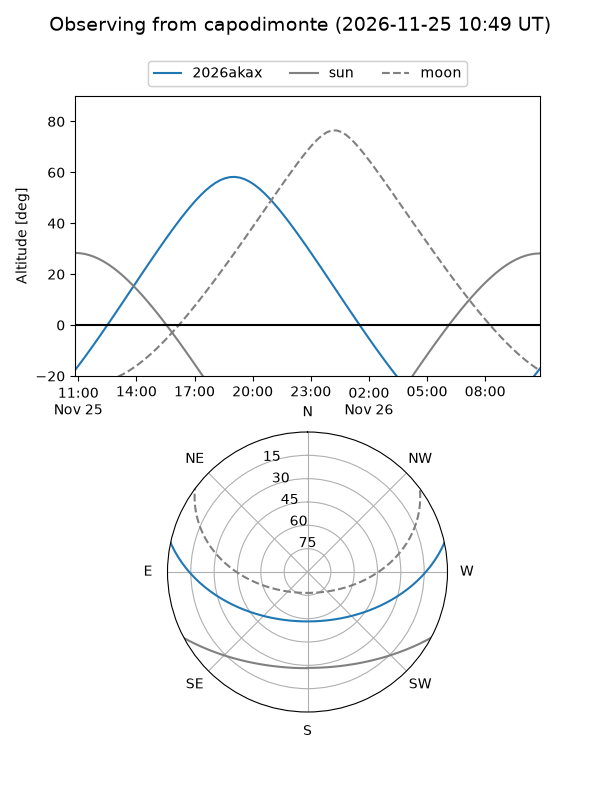
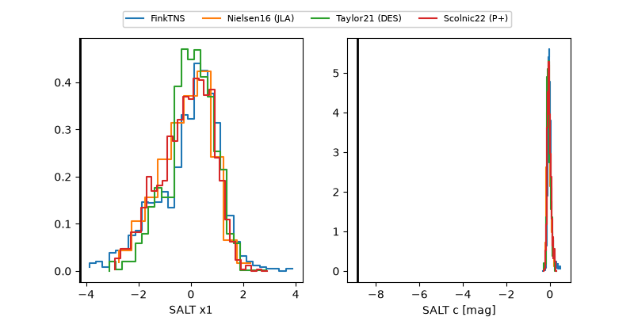

2026akax
Target 2026akax at 2026-11-24 16:16
Aliases and brokers:
FINK-ZTF: ztf.fink-portal.org/ZTF26achvelq
Lasair-ZTF: lasair-ztf.lsst.ac.uk/objects/ZTF26achvelq
ALeRCE-ZTF: alerce.online/object/ZTF26achvelq
YSE-PZ: ziggy.ucolick.org/yse/transient_detail/2026akax
TNS name: wis-tns.org/object/2026akax
Direct TNS query: direct search
alt names
ZTF26achvelq (ztf,fink_ztf)
2026akax (tns,yse)
Coordinates:
equatorial (ra, dec) = 3.8080,+8.93440
equatorial (HMS+DMS) = 00:15:13.92,+08:56:03.84
galactic (l, b) = (108.0069,-52.88496)
Flags:
likely cv: !!
CV pen: 0.000344383497653554
peak dt: +27.4
Photometry:
last atlaso=19.48, ztfg=19.62, ztfr=19.49
2 atlaso, 1 ztfg, 2 ztfr detections
Lightcurve

Visibility



Additional plots
